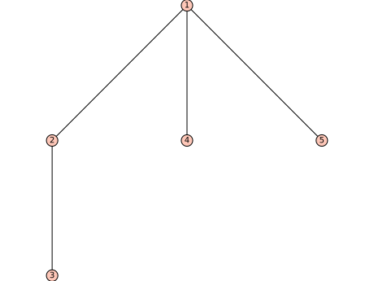
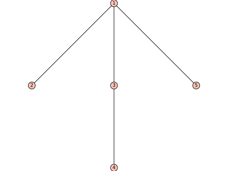

Ordered Rooted Trees¶
AUTHORS:
- Florent Hivert (2010-2011): initial revision
- Frédéric Chapoton (2010): contributed some methods
-
class
sage.combinat.ordered_tree.LabelledOrderedTree(parent, children, label=None, check=True)¶ Bases:
sage.combinat.abstract_tree.AbstractLabelledClonableTree,sage.combinat.ordered_tree.OrderedTreeLabelled ordered trees.
A labelled ordered tree is an ordered tree with a label attached at each node.
INPUT:
children– a list or tuple or more generally any iterable of trees or object convertible to treeslabel– any Sage object (default:None)
EXAMPLES:
sage: x = LabelledOrderedTree([], label = 3); x 3[] sage: LabelledOrderedTree([x, x, x], label = 2) 2[3[], 3[], 3[]] sage: LabelledOrderedTree((x, x, x), label = 2) 2[3[], 3[], 3[]] sage: LabelledOrderedTree([[],[[], []]], label = 3) 3[None[], None[None[], None[]]]
-
left_right_symmetry()¶ Return the symmetric tree of
self.The symmetric tree \(s(T)\) of a labelled ordered tree \(T\) is defined as follows: If \(T\) is a labelled ordered tree with children \(C_1, C_2, \ldots, C_k\) (listed from left to right), then the symmetric tree \(s(T)\) of \(T\) is a labelled ordered tree with children \(s(C_k), s(C_{k-1}), \ldots, s(C_1)\) (from left to right), and with the same root label as \(T\).
Note
If you have a subclass of
LabelledOrderedTree()which also inherits from another subclass ofOrderedTree()which does not come with a labelling, then (depending on the method resolution order) it might happen that this method gets overridden by an implementation from that other subclass, and thus forgets about the labels. In this case you need to manually override this method on your subclass.EXAMPLES:
sage: L2 = LabelledOrderedTree([], label=2) sage: L3 = LabelledOrderedTree([], label=3) sage: T23 = LabelledOrderedTree([L2, L3], label=4) sage: T23.left_right_symmetry() 4[3[], 2[]] sage: T223 = LabelledOrderedTree([L2, T23], label=17) sage: T223.left_right_symmetry() 17[4[3[], 2[]], 2[]] sage: T223.left_right_symmetry().left_right_symmetry() == T223 True
-
sort_key()¶ Return a tuple of nonnegative integers encoding the labelled tree
self.The first entry of the tuple is a pair consisting of the number of children of the root and the label of the root. Then the rest of the tuple is the concatenation of the tuples associated to these children (we view the children of a tree as trees themselves) from left to right.
This tuple characterizes the labelled tree uniquely, and can be used to sort the labelled ordered trees provided that the labels belong to a type which is totally ordered.
Warning
This method overrides
OrderedTree.sort_key()and returns a result different from what the latter would return, as it wants to encode the whole labelled tree including its labelling rather than just the unlabelled tree. Therefore, be careful with using this method on subclasses ofLabelledOrderedTree; under some circumstances they could inherit it from another superclass instead of fromOrderedTree, which would cause the method to forget the labelling. See the docstring ofOrderedTree.sort_key().EXAMPLES:
sage: L2 = LabelledOrderedTree([], label=2) sage: L3 = LabelledOrderedTree([], label=3) sage: T23 = LabelledOrderedTree([L2, L3], label=4) sage: T23.sort_key() ((2, 4), (0, 2), (0, 3)) sage: T32 = LabelledOrderedTree([L3, L2], label=5) sage: T32.sort_key() ((2, 5), (0, 3), (0, 2)) sage: T23322 = LabelledOrderedTree([T23, T32, L2], label=14) sage: T23322.sort_key() ((3, 14), (2, 4), (0, 2), (0, 3), (2, 5), (0, 3), (0, 2), (0, 2))
-
class
sage.combinat.ordered_tree.LabelledOrderedTrees(category=None)¶ Bases:
sage.structure.unique_representation.UniqueRepresentation,sage.structure.parent.ParentThis is a parent stub to serve as a factory class for trees with various label constraints.
EXAMPLES:
sage: LOT = LabelledOrderedTrees(); LOT Labelled ordered trees sage: x = LOT([], label = 3); x 3[] sage: x.parent() is LOT True sage: y = LOT([x, x, x], label = 2); y 2[3[], 3[], 3[]] sage: y.parent() is LOT True
-
Element¶ alias of
LabelledOrderedTree
-
cardinality()¶ Return the cardinality of
self.EXAMPLES:
sage: LabelledOrderedTrees().cardinality() +Infinity
-
labelled_trees()¶ Return the set of labelled trees associated to
self.This is precisely
self, becauseselfalready is the set of labelled ordered trees.EXAMPLES:
sage: LabelledOrderedTrees().labelled_trees() Labelled ordered trees sage: LOT = LabelledOrderedTrees() sage: x = LOT([], label = 3) sage: y = LOT([x, x, x], label = 2) sage: y.canonical_labelling() 1[2[], 3[], 4[]]
-
unlabelled_trees()¶ Return the set of unlabelled trees associated to
self.This is the set of ordered trees, since
selfis the set of labelled ordered trees.EXAMPLES:
sage: LabelledOrderedTrees().unlabelled_trees() Ordered trees
-
-
class
sage.combinat.ordered_tree.OrderedTree(parent=None, children=[], check=True)¶ Bases:
sage.combinat.abstract_tree.AbstractClonableTree,sage.structure.list_clone.ClonableListThe class of (ordered rooted) trees.
An ordered tree is constructed from a node, called the root, on which one has grafted a possibly empty list of trees. There is a total order on the children of a node which is given by the order of the elements in the list. Note that there is no empty ordered tree (so the smallest ordered tree consists of just one node).
INPUT:
One can create a tree from any list (or more generally iterable) of trees or objects convertible to a tree. Alternatively a string is also accepted. The syntax is the same as for printing: children are grouped by square brackets.
EXAMPLES:
sage: x = OrderedTree([]) sage: x1 = OrderedTree([x,x]) sage: x2 = OrderedTree([[],[]]) sage: x1 == x2 True sage: tt1 = OrderedTree([x,x1,x2]) sage: tt2 = OrderedTree([[], [[], []], x2]) sage: tt1 == tt2 True sage: OrderedTree([]) == OrderedTree() True
-
is_empty()¶ Return if
selfis the empty tree.For ordered trees, this always returns
False.Note
this is different from
bool(t)which returns whetherthas some child or not.EXAMPLES:
sage: t = OrderedTrees(4)([[],[[]]]) sage: t.is_empty() False sage: bool(t) True
-
left_right_symmetry()¶ Return the symmetric tree of
self.The symmetric tree \(s(T)\) of an ordered tree \(T\) is defined as follows: If \(T\) is an ordered tree with children \(C_1, C_2, \ldots, C_k\) (listed from left to right), then the symmetric tree \(s(T)\) of \(T\) is the ordered tree with children \(s(C_k), s(C_{k-1}), \ldots, s(C_1)\) (from left to right).
EXAMPLES:
sage: T = OrderedTree([[],[[]]]) sage: T.left_right_symmetry() [[[]], []] sage: T = OrderedTree([[], [[], []], [[], [[]]]]) sage: T.left_right_symmetry() [[[[]], []], [[], []], []]
-
normalize(inplace=False)¶ Return the normalized tree of
self.INPUT:
inplace– boolean, (defaultFalse) ifTrue, thenselfis modified and nothing returned. Otherwise the normalized tree is returned.
The normalization of an ordered tree \(t\) is an ordered tree \(s\) which has the property that \(t\) and \(s\) are isomorphic as unordered rooted trees, and that if two ordered trees \(t\) and \(t'\) are isomorphic as unordered rooted trees, then the normalizations of \(t\) and \(t'\) are identical. In other words, normalization is a map from the set of ordered trees to itself which picks a representative from every equivalence class with respect to the relation of “being isomorphic as unordered trees”, and maps every ordered tree to the representative chosen from its class.
This map proceeds recursively by first normalizing every subtree, and then sorting the subtrees according to the value of the
sort_key()method.Consider the quotient map \(\pi\) that sends a planar rooted tree to the associated unordered rooted tree. Normalization is the composite \(s \circ \pi\), where \(s\) is a section of \(\pi\).
EXAMPLES:
sage: OT = OrderedTree sage: ta = OT([[],[[]]]) sage: tb = OT([[[]],[]]) sage: ta.normalize() == tb.normalize() True sage: ta == tb False
An example with inplace normalization:
sage: OT = OrderedTree sage: ta = OT([[],[[]]]) sage: tb = OT([[[]],[]]) sage: ta.normalize(inplace=True); ta [[], [[]]] sage: tb.normalize(inplace=True); tb [[], [[]]]
-
plot()¶ Plot the tree
self.Warning
For a labelled tree, this will fail unless all labels are distinct. For unlabelled trees, some arbitrary labels are chosen. Use
_latex_(),view,_ascii_art_()orpretty_printfor more faithful representations of the data of the tree.EXAMPLES:
sage: p = OrderedTree([[[]],[],[]]) sage: ascii_art(p) _o__ / / / o o o | o sage: p.plot() Graphics object consisting of 10 graphics primitives
Now a labelled example:
sage: g = OrderedTree([[],[[]],[]]).canonical_labelling() sage: ascii_art(g) _1__ / / / 2 3 5 | 4 sage: g.plot() Graphics object consisting of 10 graphics primitives

-
sort_key()¶ Return a tuple of nonnegative integers encoding the ordered tree
self.The first entry of the tuple is the number of children of the root. Then the rest of the tuple is the concatenation of the tuples associated to these children (we view the children of a tree as trees themselves) from left to right.
This tuple characterizes the tree uniquely, and can be used to sort the ordered trees.
Note
By default, this method does not encode any extra structure that
selfmight have – e.g., if you were to define a classEdgeColoredOrderedTreewhich implements edge-colored trees and which inherits fromOrderedTree, then thesort_key()method it would inherit would forget about the colors of the edges (and thus would not characterize edge-colored trees uniquely). If you want to preserve extra data, you need to override this method or use a new method. For instance, on theLabelledOrderedTreesubclass, this method is overridden by a slightly different method, which encodes not only the numbers of children of the nodes ofself, but also their labels. Be careful with using overridden methods, however: If you have (say) a classBalancedTreewhich inherits fromOrderedTreeand which encodes balanced trees, and if you have another classBalancedLabelledOrderedTreewhich inherits both fromBalancedOrderedTreeand fromLabelledOrderedTree, then (depending on the MRO) the defaultsort_key()method onBalancedLabelledOrderedTree(unless manually overridden) will be taken either fromBalancedTreeor fromLabelledOrderedTree, and in the former case will ignore the labelling!EXAMPLES:
sage: RT = OrderedTree sage: RT([[],[[]]]).sort_key() (2, 0, 1, 0) sage: RT([[[]],[]]).sort_key() (2, 1, 0, 0)
-
to_binary_tree_left_branch()¶ Return a binary tree of size \(n-1\) (where \(n\) is the size of \(t\), and where \(t\) is
self) obtained from \(t\) by the following recursive rule:- if \(x\) is the left brother of \(y\) in \(t\), then \(x\) becomes the left child of \(y\);
- if \(x\) is the last child of \(y\) in \(t\), then \(x\) becomes the right child of \(y\),
and removing the root of \(t\).
EXAMPLES:
sage: T = OrderedTree([[],[]]) sage: T.to_binary_tree_left_branch() [[., .], .] sage: T = OrderedTree([[], [[], []], [[], [[]]]]) sage: T.to_binary_tree_left_branch() [[[., .], [[., .], .]], [[., .], [., .]]]
-
to_binary_tree_right_branch()¶ Return a binary tree of size \(n-1\) (where \(n\) is the size of \(t\), and where \(t\) is
self) obtained from \(t\) by the following recursive rule:- if \(x\) is the right brother of \(y\) in \(t\), then`x` becomes the right child of \(y\);
- if \(x\) is the first child of \(y\) in \(t\), then \(x\) becomes the left child of \(y\),
and removing the root of \(t\).
EXAMPLES:
sage: T = OrderedTree([[],[]]) sage: T.to_binary_tree_right_branch() [., [., .]] sage: T = OrderedTree([[], [[], []], [[], [[]]]]) sage: T.to_binary_tree_right_branch() [., [[., [., .]], [[., [[., .], .]], .]]]
-
to_dyck_word()¶ Return the Dyck path corresponding to
selfwhere the maximal height of the Dyck path is the depth ofself.EXAMPLES:
sage: T = OrderedTree([[],[]]) sage: T.to_dyck_word() [1, 0, 1, 0] sage: T = OrderedTree([[],[[]]]) sage: T.to_dyck_word() [1, 0, 1, 1, 0, 0] sage: T = OrderedTree([[], [[], []], [[], [[]]]]) sage: T.to_dyck_word() [1, 0, 1, 1, 0, 1, 0, 0, 1, 1, 0, 1, 1, 0, 0, 0]
-
to_parallelogram_polyomino(bijection=None)¶ Return a polyomino parallelogram.
INPUT:
bijection– (default:'Boussicault-Socci') is the name of the bijection to use. Possible values are'Boussicault-Socci','via dyck and Delest-Viennot'.
EXAMPLES:
sage: T = OrderedTree([[[], [[], [[]]]], [], [[[],[]]], [], []]) sage: T.to_parallelogram_polyomino( bijection='Boussicault-Socci' ) [[0, 0, 0, 1, 1, 0, 1, 1, 1, 1, 0, 1, 1, 1], [1, 1, 1, 1, 1, 0, 0, 1, 1, 0, 1, 1, 0, 0]] sage: T = OrderedTree( [] ) sage: T.to_parallelogram_polyomino() [[1], [1]] sage: T = OrderedTree( [[]] ) sage: T.to_parallelogram_polyomino() [[0, 1], [1, 0]] sage: T = OrderedTree( [[],[]] ) sage: T.to_parallelogram_polyomino() [[0, 1, 1], [1, 1, 0]] sage: T = OrderedTree( [[[]]] ) sage: T.to_parallelogram_polyomino() [[0, 0, 1], [1, 0, 0]]
-
to_poset(root_to_leaf=False)¶ Return the poset obtained by interpreting the tree as a Hasse diagram. The default orientation is from leaves to root but you can pass
root_to_leaf=Trueto obtain the inverse orientation.INPUT:
root_to_leaf– boolean, true if the poset orientation should be from root to leaves. It is false by default.
EXAMPLES:
sage: t = OrderedTree([]) sage: t.to_poset() Finite poset containing 1 elements sage: p = OrderedTree([[[]],[],[]]).to_poset() sage: p.height(), p.width() (3, 3)
If the tree is labelled, we use its labelling to label the poset. Otherwise, we use the poset canonical labelling:
sage: t = OrderedTree([[[]],[],[]]).canonical_labelling().to_poset() sage: t.height(), t.width() (3, 3)
-
to_undirected_graph()¶ Return the undirected graph obtained from the tree nodes and edges.
The graph is endowed with an embedding, so that it will be displayed correctly.
EXAMPLES:
sage: t = OrderedTree([]) sage: t.to_undirected_graph() Graph on 1 vertex sage: t = OrderedTree([[[]],[],[]]) sage: t.to_undirected_graph() Graph on 5 vertices
If the tree is labelled, we use its labelling to label the graph. This will fail if the labels are not all distinct. Otherwise, we use the graph canonical labelling which means that two different trees can have the same graph.
EXAMPLES:
sage: t = OrderedTree([[[]],[],[]]) sage: t.canonical_labelling().to_undirected_graph() Graph on 5 vertices
-
-
class
sage.combinat.ordered_tree.OrderedTrees¶ Bases:
sage.structure.unique_representation.UniqueRepresentation,sage.structure.parent.ParentFactory for ordered trees
INPUT:
size– (optional) an integer
OUTPUT:
- the set of all ordered trees (of the given
sizeif specified)
EXAMPLES:
sage: OrderedTrees() Ordered trees sage: OrderedTrees(2) Ordered trees of size 2
Note
this is a factory class whose constructor returns instances of subclasses.
Note
the fact that OrderedTrees is a class instead of a simple callable is an implementation detail. It could be changed in the future and one should not rely on it.
-
leaf()¶ Return a leaf tree with
selfas parentEXAMPLES:
sage: OrderedTrees().leaf() []
-
class
sage.combinat.ordered_tree.OrderedTrees_all¶ Bases:
sage.sets.disjoint_union_enumerated_sets.DisjointUnionEnumeratedSets,sage.combinat.ordered_tree.OrderedTreesThe set of all ordered trees.
EXAMPLES:
sage: OT = OrderedTrees(); OT Ordered trees sage: OT.cardinality() +Infinity
-
Element¶ alias of
OrderedTree
-
labelled_trees()¶ Return the set of labelled trees associated to
selfEXAMPLES:
sage: OrderedTrees().labelled_trees() Labelled ordered trees
-
unlabelled_trees()¶ Return the set of unlabelled trees associated to
selfEXAMPLES:
sage: OrderedTrees().unlabelled_trees() Ordered trees
-
-
class
sage.combinat.ordered_tree.OrderedTrees_size(size)¶ Bases:
sage.combinat.ordered_tree.OrderedTreesThe enumerated sets of binary trees of a given size
EXAMPLES:
sage: S = OrderedTrees(3); S Ordered trees of size 3 sage: S.cardinality() 2 sage: S.list() [[[], []], [[[]]]]
-
cardinality()¶ The cardinality of
selfThis is a Catalan number.
-
element_class()¶ The class of the element of
selfEXAMPLES:
sage: from sage.combinat.ordered_tree import OrderedTrees_size, OrderedTrees_all sage: S = OrderedTrees_size(3) sage: S.element_class is OrderedTrees().element_class True sage: S.first().__class__ == OrderedTrees_all().first().__class__ True
-
random_element()¶ Return a random
OrderedTreewith uniform probability.This method generates a random
DyckWordand then uses a bijection between Dyck words and ordered trees.EXAMPLES:
sage: OrderedTrees(5).random_element() # random [[[], []], []] sage: OrderedTrees(0).random_element() Traceback (most recent call last): ... EmptySetError: There are no ordered trees of size 0 sage: OrderedTrees(1).random_element() []
-